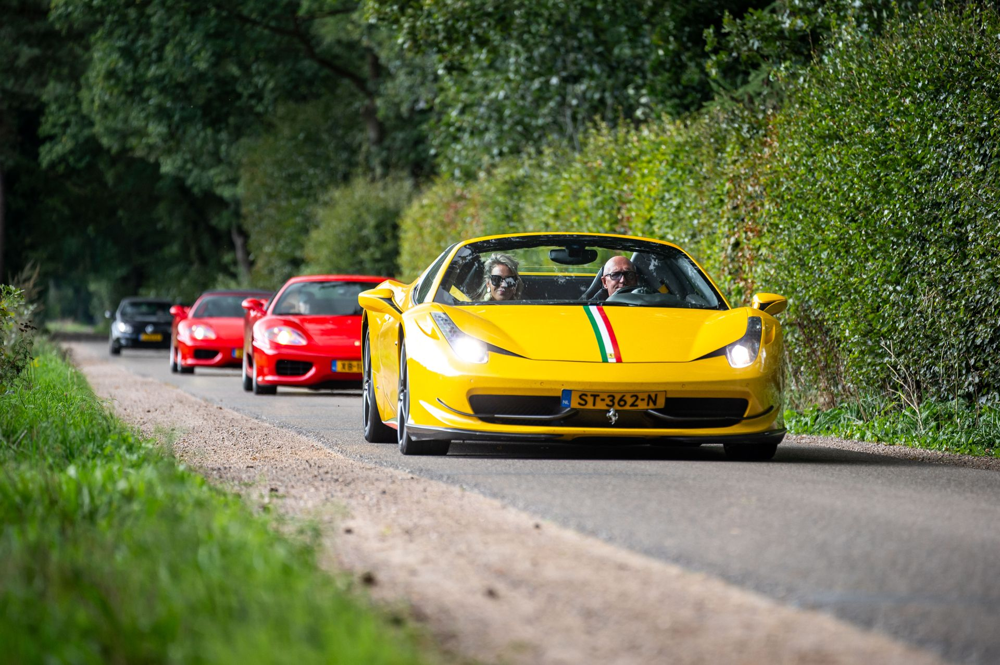

FerrariOwnersClubNL
Het Ferrari gevoel beleven en vooral: RIJDEN!
We zijn een onafhankelijk netwerk van en voor actieve Ferrari rijders.
Wat doen we?
De stichting bestaat in 2027 alweer 17 jaar!
Ons doel is een mooi rijdersprogramma te bieden en om elkaar te informeren over het plezier van "Ferrari rijden".
De FerrariOwnersClubNL onderscheidt zich door zijn laagdrempeligheid en toegankelijkheid. Ook zijn we absoluut niet gediend van elitair gedrag.
17jaar bestaan in 2027
8evenementen in 2027
0ballotage

Programma 2027
Eerstvolgende evenementen
Hoe doe jij mee?
Donateur… of niet…
We verwelkomen je graag als donateur; daarmee geef je ons niet alleen je morele support maar ook de financiële dekking die nodig is voor een komend seizoen.
Lees hoe je meedoet